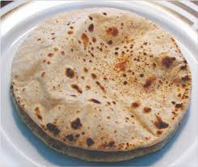

Butter Tawa Roti
Rs 15
Unleavened whole wheat flatbread… Cooked partly on gas flame. Whereas Chapati is Unleavened whole wheat flatbread which is made on tawa or griddle.
Ingredients:-
Wheat Flour,Baking Powder,Baking Soda,Sugar,Salt,Curd,Water,Oil
Home